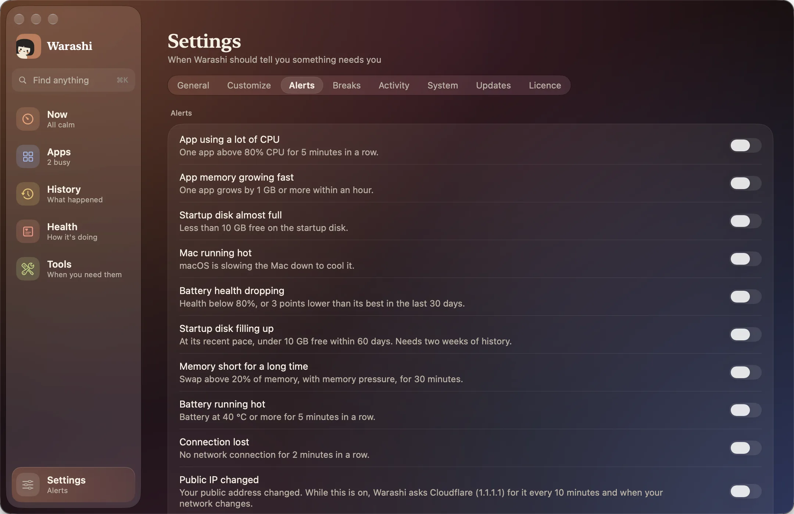
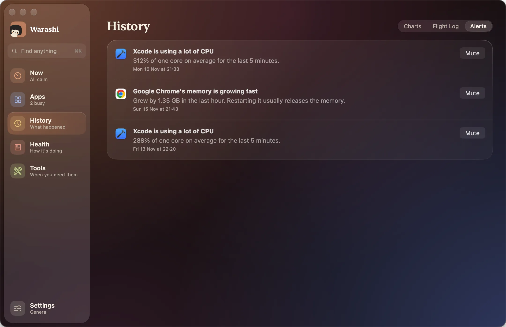

تُعلمك التنبيهات حين يحتاج شيء إليك: مرة واحدة لكل مشكلة، لا كل دقيقة تستمر فيها.
- افتح الإعدادات › التنبيهات
اضغط ⌘, ثم اختر التنبيهات.


- شغّل التنبيهات التي تريدها
كل مفتاح قاعدة واحدة (انظر الجدول أدناه). معالج خارج السيطرة، ونمو الذاكرة، والاستخدام الكبير للذاكرة، والحرارة: كلها مفعّلة من البداية؛ والباقي متوقف حتى تشغّله. تُذكر كل مشكلة مرة واحدة، ولا تُذكر ثانية إلا بعد زوالها ومرور ساعة.
- السماح بالإشعارات
في المرة الأولى يسأل macOS هل يسمح لـ Warashi بإرسال الإشعارات. اضغط سماح. وإن رفضت، تظهر التنبيهات في Warashi وفي النتوء، وتعرض الإعدادات فتح إعدادات الإشعارات.
- اقرأ التنبيهات واكتمها
اختر السجل، ثم تبويب التنبيهات، لآخر 30 يومًا مع الدليل. انقر كتم لإيقاف تنبيه لذلك التطبيق بعينه.


التنبيهات
| تنبيه | متى |
|---|---|
| تطبيق يستخدم الكثير من المعالج | تطبيق واحد فوق 80% من المعالج لمدة 5 دقائق متتالية. |
| ذاكرة تطبيق تنمو بسرعة | تطبيق واحد تنمو ذاكرته بمقدار 1 GB أو أكثر خلال ساعة. |
| قرص بدء التشغيل شبه ممتلئ | أقل من 10 GB حرة على قرص بدء التشغيل. |
| قرص بدء التشغيل يمتلئ | بوتيرته الأخيرة، سيقل المتاح عن 10 GB خلال 60 يومًا. يحتاج إلى أسبوعين من السجل. |
| نقص الذاكرة لفترة طويلة | المبادلة فوق 20% من الذاكرة، مع ضغط الذاكرة، لمدة 30 دقيقة. |
| Mac ساخن | macOS يبطئ الـ Mac ليبرّده. |
| البطارية ساخنة | البطارية عند 40 °C أو أكثر لمدة 5 دقائق متواصلة. |
| صحة البطارية تتراجع | الصحة أقل من 80%، أو أقل بـ 3 نقاط من أفضل قيمة لها في آخر 30 يومًا. |
| انقطع الاتصال | لا شبكة لمدة دقيقتين متتاليتين. |
| تغيّر عنوان IP العام | تغيّر عنوان IP العام لديك، مثلًا لأن VPN انقطع. |
| انقطع اتصال VPN | توقّف VPN كان ينقل بياناتك لمدة 20 ثانية. يُقرأ من حالة شبكة macOS نفسه، دون أي اتصال بالشبكة. لا يُرصد VPN الذي ينقل بعض البيانات فقط (النفق المجزّأ). |
| قد يكون البناء عالقًا | مترجم واحد (Swift أو Clang أو Rust وغيرها) يستخدم نواة كاملة 10 دقائق دون أن ينتهي: علامة على بناء عالق عند ملف واحد، لا بناء طويل. يذكر التنبيه المترجم ومشروعه ووكيل البرمجة الذي بدأه، وفي إشعاره إنهاء المترجم. |
| سلة المهملات تكبر | تحتوي سلة المهملات على أكثر من الحجم الذي تختاره (1 أو 2 أو 5 أو 10 GB؛ 2 GB في البداية). بدلًا من إشعار، تأتي بطاقة من النتوء (أو، إن لم يكن هناك نتوء، تنزل من عنصر Warashi في شريط القوائم) بحجم سلة المهملات: إفراغ سلة المهملات… يسأل مرة واحدة ثم يحذف كل ما فيها نهائيًا؛ وتجاهل يُبقيها هادئة حتى تكبر السلة بهذا الحجم مرة أخرى، أو لمدة أسبوع. يحتاج إلى الوصول الكامل إلى القرص، لأن macOS يحمي سلة المهملات. |
| استخدام كبير للذاكرة | ذاكرة macOS قليلة (ضغط الذاكرة حرج، أو مرتفع لمدة دقيقتين) وتطبيق يمكنك إنهاؤه يستخدم عُشر ذاكرتك أو أكثر. الضغط، لا مدى امتلاء شريط الذاكرة: فالذاكرة الممتلئة بالذاكرات المؤقتة سليمة. تأتي بطاقة من النتوء (أو، إن لم يكن هناك نتوء، تنزل من عنصر Warashi في شريط القوائم) بما يصل إلى ثلاثة تطبيقات كهذه وأحجامها (بالأحمر عند خُمس الذاكرة أو أكثر). إنهاء يستخدم إنهاء التطبيق نفسه، فيسأل عن العمل غير المحفوظ؛ وما بقي مفتوحًا بعد 5 ثوانٍ يعرض فرض الإنهاء. وإنهاء الكل يفعل الشيء نفسه لكل منها. تجاهل يفتح قائمة (وفي النتوء يتجاهله الآن فحسب): تجاهل الآن يُبقيه هادئًا حتى يكون الضغط طبيعيًا لمدة 10 دقائق، ولا يعود في غضون الساعة. وللقائمة أيضًا عدم الإظهار لمدة تطبيق، وإيقاف هذا التنبيه. ولا تُعرض عمليات macOS نفسه ولا Warashi أبدًا. |
| Mac يعاني | المعالج مشغول، أو الذاكرة قليلة، أو الـ Mac يبطئ ليبرد، لمدة دقيقتين متواصلتين. يذكر السبب، مثل سجل الرحلة. |
| نسخ احتياطي متأخر | Time Machine معدّ لكنه لم يأخذ نسخة احتياطية منذ أسبوع. يُفحص مرة في اليوم؛ ورؤية التاريخ تحتاج إلى الوصول الكامل إلى القرص. |
| تحديث macOS ينتظر | ينتظر تحديث macOS منذ أسبوع. يُفحص مرة في اليوم. |
تنبيه عنوان IP العام
ما دام هذا التنبيه مفعّلًا فقط، يسأل Warashi خدمة 1.1.1.1 من Cloudflare عن عنوان IPv4 العام لديك كل 10 دقائق وبعد تغيّر شبكتك بوقت قصير. لا يحمل الطلب أي شيء عنك أو عن Mac لديك. وإن تغيّر العنوان، تُبلَّغ بالجديد، مع تذكير بمراجعة VPN. أوقف التنبيه فيتوقف Warashi عن السؤال وينسى العنوان.
إن كان هناك ما ليس على ما يرام
- لا إشعارات: تحقق من إعدادات النظام › الإشعارات › Warashi. يعرض Warashi ملاحظة في الإعدادات › التنبيهات حين تكون مطفأة.
المزيد في استكشاف الأخطاء، أو راسل adam@warashi.app.